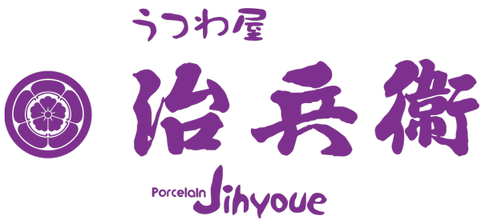

うつわ屋 デザインと販路
川本治兵衛商店
人と器をつなぎ、ものづくりの可能性をひらく。

有田の地で、うつわを扱う商店として歩んできた川本治兵衛商店。
窯元が培ってきた技術と、料理人が日々の仕事の中で育んできた経験や視点。そのあいだに立ち、器の企画やデザイン、そして使う人のもとへ届けるための仕事に携わってきました。
器は、つくる人だけで完成するものではありません。どのように使われ、どんな料理と出会い、誰の手に渡るのか。さまざまな人の関わりによって、その魅力は広がっていきます。
川本治兵衛商店は、作り手と使い手をつなぎながら、器の新たな可能性を見つけてきました。
人と人との出会いが、器の可能性を広げる
ものづくりには、それぞれの専門性があります。
窯元には、長い年月をかけて受け継がれてきた技術があり、料理人には、日々の料理を通して培われた知識と感覚があります。
そうした異なる立場の人たちが出会い、意見を交わすことで、新しい道具や器のかたちが生まれることもあります。
川本治兵衛商店が関わってきた商品開発も、その一つです。
作り手の技術を理解し、使い手の視点を取り入れ、商品として形にしていく。人と人とのつながりを生かした取り組みを重ねてきました。
器の魅力を、その先の暮らしへ
優れた器や道具も、その魅力が伝わり、使う人のもとへ届いてこそ暮らしの中で生きてきます。
どのような形で紹介するのか。どんな人に届けるのか。器そのものだけでなく、その先にある使われ方まで見つめることも、商店としての大切な役割です。
つくり手の想いを受け取り、使い手へとつないでいく。その間に立つからこそ見えてくる価値があります。
和季づきで
和季づきでは、これまで築いてきた作り手や料理人とのつながりを生かし、器の背景にあるものづくりや、暮らしの中での楽しみ方を紹介していきます。
ただ器を届けるだけではなく、その器を知ること、使ってみることから始まる新しい発見を。
川本治兵衛商店は、人と器、そして暮らしをつなぐ立場から、和季づきに関わっています。
INTERVIEW
川本治兵衛商店に聞く
人との出会いから生まれた、これまでの仕事。
［インタビュー本文を掲載］